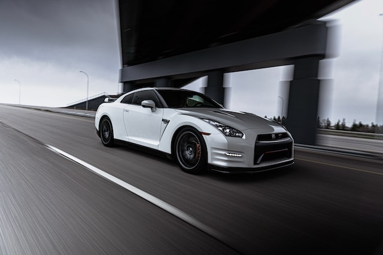

Nissan GTR

History
Between 1969 and 1974, and again between 1989 and 2002, Nissan produced a high performance version of its
Nissan Skyline coupe, the Skyline GT-R. This car is proved to be iconic for Nissan, achieving much fame and
success on the road and in motorsports.
The GT-R is an entirely new model sharing a little with the Skyline GT-R, including its signature four round
tail lights, it also features the ATTESA E-TS Pro all-wheel drive system and a twin-turbocharged 6-cylinder
engine. But the HICAS four-wheel-steering system is removed and the former straight-6 RB26DETT engine is
replaced with the VR38DETT engine.[5] Carrying on another detail of its predecessor, the chassis code for
the all-new version is CBA-R35; DBA-R35 and 4BA-R35 for later model years,[6] or R35 for short (where CBA,
DBA and 4BA stands for the emissions standard prefix). The GT-R also retained its predecessor's nickname,
Godzilla, originally given by the Australian motoring publication Wheels in 1989 for its R32 generation
Overview
The GT-R is powered by the VR38DETT engine, a 3.8L V6 with a hybrid wet/dry-sump pressurized lubrication system
and plasma-sprayed cylinder bores. Hand-built by "Takumi Craftsmen," each engine takes 8.3 hours to assemble.
The output has evolved from 473 hp in 2007 to 562 hp in the current 4BA–R35 model. The car features the ATTESA
E-TS Pro all-wheel-drive system, unique BorgWarner dual-clutch transmission, and three drive modes. The Premium
Midship platform combines steel, carbon fiber, and die-cast aluminum for a 54:46 front-to-rear weight
distribution. An active suspension system, Bilstein electronic adaptive dampers, and 20-inch forged alloy wheels
enhance performance. The exterior design, influenced by Japanese culture, incorporates "aero blade" front
fenders and a Gundam-inspired aesthetic. Inside, the hand-stitched leather interior, carbon fiber accents, and
multifunction display designed by Polyphony Digital contribute to a refined driving experience. With a drag
coefficient of 0.26–0.27, the GT-R remains a standout in the realm of production sports cars.